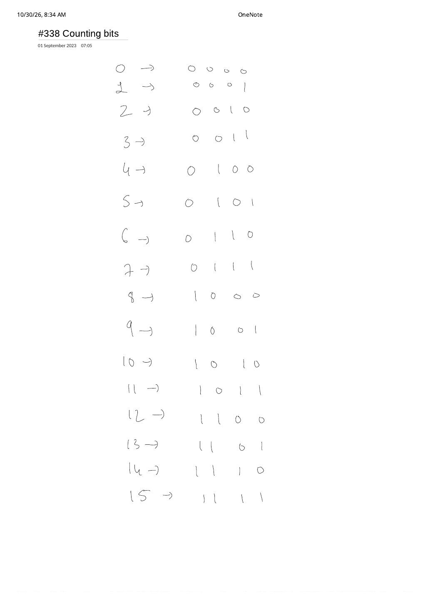

LC 338: Counting Bits — Spotting $\mathcal{O}(1)$ DP from the 4-Bit Table
Expanded from handwritten competitive coding study note: 01_338_Counting_bits.pdf
1. Problem Statement & Constraints
Given a non-negative integer $n$ ($0 \le n \le 10^5$), return an array ans of length $n + 1$ such that for every $i \in [0, n]$, ans[i] is the number of 1s (the popcount or Hamming weight) in the binary representation of $i$.
Follow-Up Target
Solve the problem in single-pass linear time $\mathcal{O}(n)$ and $\mathcal{O}(1)$ auxiliary space (excluding the returned array), without relying on built-in bit-count intrinsics such as __builtin_popcount or int.bit_count().
2. Brute $\to$ Better $\to$ Optimal Progression
- Brute Force — Independent Bit Scan ($\mathcal{O}(n \log n)$): For each integer $i \in [0, n]$, shift $x = i$ right until $x = 0$, adding
x & 1at each step. Because $i$ has $\lfloor \log_2 i \rfloor + 1$ bits, summing across $0 \dots n$ costs $\sum_{i=1}^{n} \Theta(\log i) = \Theta(n \log n)$ bit operations. - Better Per-Number Loop — Brian Kernighan's Trick: Repeatedly clearing the lowest set bit via
x = x & (x - 1)runs in $\Theta(\text{popcount}(i))$ per integer. However, on average half the bits of $i$ are1, so total work over $[0, n]$ is still $\Theta(n \log n)$! - Optimal — Reuse Already-Solved Smaller Integers ($\mathcal{O}(n)$ DP): Notice why the per-number loops waste work: when shifting $i = 13$ (
1101) right by one bit, we land on $6$ (0110)—whose popcount we already computed earlier in the same array!
3. Handwritten Scratchpad: The $0 \dots 15$ 4-Bit Table
In 01_338_Counting_bits.pdf, the entire page writes out the 4-bit binary representations from $0$ (0000) down to $15$ (1111). Laying those 16 rows side by side in power-of-two blocks immediately exposes three equivalent $\mathcal{O}(1)$ dynamic programming recurrences:
$[0..3]$ (00xx) |
$[4..7] = 4 + [0..3]$ (01xx) |
$[8..11] = 8 + [0..3]$ (10xx) |
$[12..15] = 8 + [4..7]$ (11xx) |
|---|---|---|---|
0 → 0000 (0) | 4 → 0100 (1) | 8 → 1000 (1) | 12 → 1100 (2) |
1 → 0001 (1) | 5 → 0101 (2) | 9 → 1001 (2) | 13 → 1101 (3) |
2 → 0010 (1) | 6 → 0110 (2) | 10 → 1010 (2) | 14 → 1110 (3) |
3 → 0011 (2) | 7 → 0111 (3) | 11 → 1011 (3) | 15 → 1111 (4) |
dp[j].The Three Canonical $\mathcal{O}(1)$ Bit-DP Transitions (Base Case $\text{dp}[0] = 0$)
- Right-Shift + Parity (Cleanest): Dropping the least significant bit gives $\lfloor i / 2 \rfloor = i \gg 1$, leaving only the dropped bit $(i \bmod 2)$: $$\text{dp}[i] = \text{dp}[\lfloor i / 2 \rfloor] + (i \bmod 2)$$
- Power-of-2 MSB Offset: Within each interval $[2^k, 2^{k+1} - 1]$, stripping the leading $2^k$ bit maps $i$ back into $[0, 2^k - 1]$: $$\text{dp}[i] = 1 + \text{dp}[i - 2^{\lfloor \log_2 i \rfloor}]$$
- Lowest-Set-Bit Clear (Kernighan): Bitwise ANDing $i$ with $i - 1$ flips the rightmost
1bit to0and leaves higher bits untouched: $$\text{dp}[i] = \text{dp}[i \mathbin{\&} (i - 1)] + 1$$
4. Step-by-Step Dry Run ($n = 8$)
Tracing dp[i] = dp[i >> 1] + (i & 1) for $n = 8$
dp[0] = 0 (base case: 0000)i = 1 (0001): dp[1 >> 1] + (1 & 1) = dp[0] + 1 = 1i = 2 (0010): dp[2 >> 1] + (2 & 1) = dp[1] + 0 = 1i = 3 (0011): dp[3 >> 1] + (3 & 1) = dp[1] + 1 = 2i = 4 (0100): dp[4 >> 1] + (4 & 1) = dp[2] + 0 = 1i = 5 (0101): dp[5 >> 1] + (5 & 1) = dp[2] + 1 = 2i = 6 (0110): dp[6 >> 1] + (6 & 1) = dp[3] + 0 = 2i = 7 (0111): dp[7 >> 1] + (7 & 1) = dp[3] + 1 = 3i = 8 (1000): dp[8 >> 1] + (8 & 1) = dp[4] + 0 = 1Returned array:
[0, 1, 1, 2, 1, 2, 2, 3, 1].
5. Clean C++ & Python Implementations
// LC 338: Counting Bits — O(n) Time, O(1) Auxiliary Space
#include <vector>
using namespace std;
class Solution {
public:
// Approach 1: Right-Shift + LSB (recommended)
vector<int> countBits(int n) {
vector<int> dp(n + 1, 0);
for (int i = 1; i <= n; ++i) {
dp[i] = dp[i >> 1] + (i & 1);
}
return dp;
}
// Approach 2: Power-of-2 MSB Offset (directly mirrors the 4-bit block table)
vector<int> countBitsOffset(int n) {
vector<int> dp(n + 1, 0);
int offset = 1;
for (int i = 1; i <= n; ++i) {
if (offset * 2 == i) offset = i;
dp[i] = 1 + dp[i - offset];
}
return dp;
}
// Approach 3: Kernighan Lowest-Set-Bit Clear
vector<int> countBitsKernighan(int n) {
vector<int> dp(n + 1, 0);
for (int i = 1; i <= n; ++i) {
dp[i] = dp[i & (i - 1)] + 1;
}
return dp;
}
};class Solution:
def countBits(self, n: int) -> list[int]:
dp = [0] * (n + 1)
for i in range(1, n + 1):
dp[i] = dp[i >> 1] + (i & 1)
return dp6. Complexity Proof & Key Edge Cases
- Time Complexity — $\mathcal{O}(n)$: The loop executes $n$ iterations ($i = 1 \dots n$), performing one bit-shift, one bitwise AND, and one addition ($\mathcal{O}(1)$ work) per state. Notice that topological order is valid because $\lfloor i / 2 \rfloor \lt i$ for every integer $i \ge 1$.
- Space Complexity — $\mathcal{O}(1)$ auxiliary ($\mathcal{O}(n)$ output): Only the output vector
dpof size $n + 1$ is allocated. - Edge Cases & Pitfalls:
- $n = 0$: Loop range $1 \dots 0$ does not run, returning
[0]cleanly. - Operator Precedence Trap in C++/Python: Always parenthesize
(i & 1)! In both C++ and Python, binary+binds tighter than bitwise&, so writingdp[i >> 1] + i & 1evaluates as(dp[i >> 1] + i) & 1and silently corrupts every answer $\ge 2$! - Powers of $2$ ($i = 2^k$): Both
dp[i >> 1] + 0anddp[i & (i - 1)] + 1 = dp[0] + 1evaluate to1.
- $n = 0$: Loop range $1 \dots 0$ does not run, returning
From the Handwritten Notes
View original handwritten page — 01_338_Counting_bits.pdf (4-bit binary table 0 to 15)


01_338_Counting_bits.pdf: Listing 4-bit binary representations $0 \to \text{0000}$ through $15 \to \text{1111}$ to spot block repetition and right-shift recurrences.